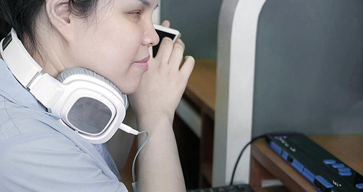
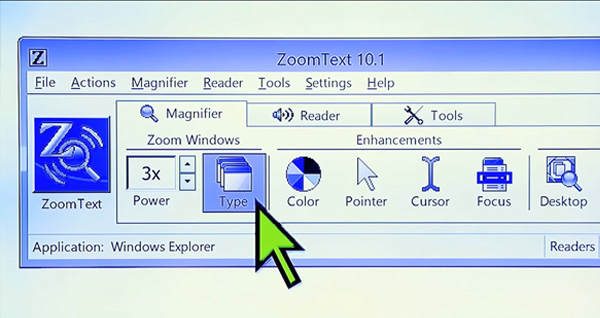
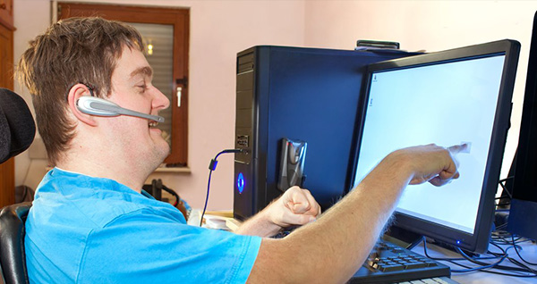
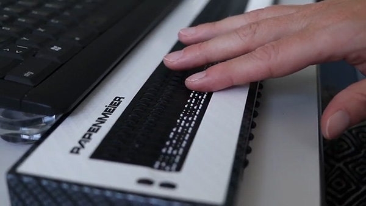
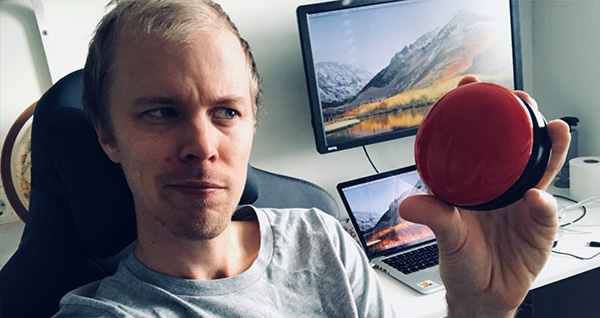

04 Carousel
Siehe Artikel: Barrierefreie
Karussells (von Sonja Weckenmann)
Aufgabe
Konstruiere aus den folgenden Inhalten ein Karussell. Das Karussell soll jeweils eine der assistiven
Technologien gleichzeitig darstellen und barrierefrei, also per Tastatur bedienbar sein. Für jede assistive
Technologie soll die Kombination aus Bild, Titel und kurzer Beschreibung durchrotiert werden können.
Assistive Technologien sollen vom Durchrotieren der Inhalte in Kenntnis gesetzt werden. Nutze gerne die im
Repository enthaltenen Icons. 😉
Bonus
Bonus-Herausforderungen können sein:
- Die einzelnen Elemente können gezielt angesprungen werden (Direktnavigation).
- Die einzelnen Elementn können jeweils noch ein Link (zu einem beliebigen URL) enthalten, quasi als
Detailangaben.
- Ein Modus zum automatischen Durchrotieren kann aktiviert und deaktiviert werden.
- Screenreader
-
Ein Screenreader ist eine Software, die den Bildschirminhalt in Sprache oder
Braille übersetzt und Menschen mit Sehbeeinträchtigungen ermöglicht, das Internet zu nutzen.

- Vergrößerungssoftware
- Vergrößerungssoftware ermöglicht es Menschen mit Sehbeeinträchtigungen, den
Bildschirm zu vergrößern, um Texte, Bilder und andere Inhalte besser sehen zu können.

- Spracheingabe
- Spracheingabesoftware ermöglicht es Menschen mit motorischen Beeinträchtigungen,
das Internet durch gesprochene Befehle und Spracheingaben zu bedienen.

- Braillezeile
- Eine Braillezeile ist ein Gerät, das Text in Braille-Schriftzeichen umwandelt und
es Menschen mit Sehbeeinträchtigungen ermöglicht, den Inhalt des Internets taktil zu erfassen.

- Tastatur- und Schaltersteuerung
- Beschreibung: Tastatur- und Schaltersteuerung ermöglicht es Menschen mit motorischen
Beeinträchtigungen, das Internet mithilfe von Tastaturen, Schaltern oder speziellen
Eingabegeräten zu bedienen.
